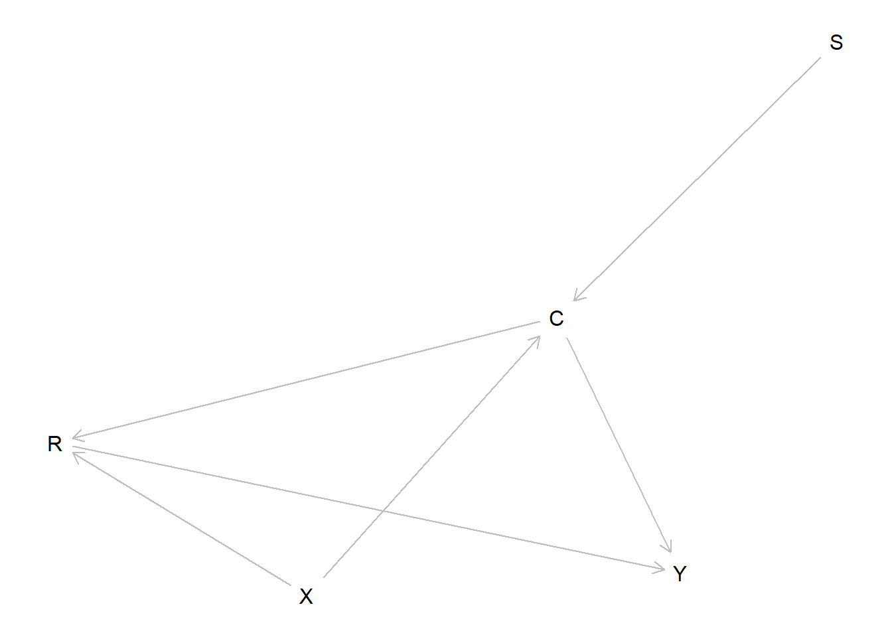

Chapter 11 Clue Selection as a Decision Problem
We draw out the implications of the causal model approach for clue selection strategies. We introduce a tool for generating an optimal decision tree for clue selection given.
Consider now the problem of determining what qualitative data to gather on a case. Evidently it makes sense to gather information on clues that have large probative value, but whether or not clues have probative value can depend on what clues have already been collected: Finding out that the Butler had no motive may be informative for the claim that he is innocent, but it may not be useful if you already know he had no opportunity.
In our running example, we can see many situations where researchers have a choice of observations that could be informative, and situations in which the informativeness of an observation can depend on what is already known. In Figure , we showed how one can use the structural equations to provide a set of conditional causal graphs that let one see easily what caused what at different values of the root nodes \(S\) and \(X\). Each of these plots graphs a particular context. We can thus readily see which collection of root nodes constitutes a given query, or estimand. Turning things around, we can see, given a query, which nodes are informative of the probability that the query is true.78
For example, suppose one can see that \(X=0\) and \(Y=0\) but does not know the causal effect of \(X\) on \(Y\) This is equivalent to saying that we know that we are in either panel \(A\) or \(B\) but we do not know which one. Defining the query in terms of root nodes, the question becomes \(S \stackrel{?}{=} 1\), or \(P(S=1|X=0,Y=0)\); the difference between the contexts in the two panels is that \(S=0\) when, and only when, \(X=0\) causes \(Y=0\) . Given the structural equation for \(S\), \(P(S|X=0,Y=0) = P(S|X=0)\), and given independence of \(X\) and \(S\), \(P(S=1|X=0)= \pi^S\). Figuring out \(S\) fully answers the query: that is, given what we know already, \(S\) is doubly decisive for the proposition.79
We can also see instances in this example of how existing data can make clues uninformative. Say one wanted to know if \(X\) causes \(C\) in a case. As we can see from inspection of the panels, this query is equivalent to asking whether \(S=1\) (as \(X\) causes \(C\) only in those two panels (\(B\) and \(D\)) where \(S=1\). Data on \(R\) is unconditionally informative about this query as \(R\) is not \(d-\)separated from \(S\). For example, \(R=1\) implies \(S=0\). However, if \(C\) and \(X\) are already known, then \(R\) is no longer informative because \(C\) and \(X\) together d-separate \(R\) from \(S\).80
The running example also lets us demonstrate how informative clues can be found in many different places in a graph.
Informative spouses Spouses—parents of the same child—can inform on one another. As we have seen in other examples, when an outcome has multiple causes, knowing the value of one of those causes helps assess the effect(s) of the other(s). For example, here, \(S\) and \(X\) are both parents of \(C\); \(S\) is thus informative for assessing whether \(X\) causes \(C\). Indeed this query, written in terms of roots, is simply \(P(S)\): \(X\) causes \(C\) if and only if \(S=1\). Likewise, \(S\) causes \(C\) (negatively) if and only if \(X=1\).
Pre-treatment clues. Did the absence of media reports on corruption (\(R=0\)) cause government survival (\(Y=0\))? Look to the pre-treatment clue, \(X\): \(X=0\) is a smoking gun establishing that the absence of a report produced government survival. Or, substantively, if there were a free press, then a missing report would never be a cause of survival since it would occur only in the absence of corruption, which would itself be sufficient for survival. More broadly, this example illustrates how knowledge of selection into treatment can be informative about treatment effects.
Post-outcome clues. Suppose we observe the presence of a free press (\(X=1\)) and want to know if it caused a lack of corruption (\(C=0\)), but cannot observe the level of corruption directly. Observing \(Y\)—which occurs after the outcome—is informative here: if \(X=1\), then \(X\) causes \(C\) (negatively) if and only if \(Y=0\). When an outcome is not observed, a consequence of that outcome can be informative about its value and, thus, about the effect of an observed suspected cause.
Mediators as clues: We see a politically sensitive government (\(S=1\)) and its survival (\(S=0\)). Did the government survive because of its sensitivity to public opinion? Here, the mediation clue \(C\) is helpful: a lack of corruption, \(C=0\), is evidence of \(S\)’s negative effect on \(Y\). –>
And of course, different clues can be informative in different ways for different types of estimand.
Needed then is a systematic way for identifying what clues to look for, and perhaps, in what order to look for them.
11.1 A strategic approach
The representation of inference problems as one of querying a Bayesian model points to a relatively simple method for answering this question, at least for small problems. Consider first a situation where one has access to data \(W\) and wants to know the expected probative value of all possible collections of data one could gather.
This can be done as follows:
- First define a model, including a signature \(S = (\mathcal{U}, \mathcal{V}, \mathcal{R})\), structural equations \(\mathcal{F}\), and beliefs on \(\mathcal{U}\), \(P()\).
- Second, define a query on the model, as a statement about values of \(\mathcal{V}\) given different \(\mathbb{do}\) operations.
- Third, use \(P\) to draw a vector of \(U\) values and assess whether the query is true or not given \(U\) and whether \(W\) obtains. Then, over many repeated draws from \(P\) calculate the share of times that the query is true among those cases in which \(W\) is true. This gives posterior probability on \(Q\), \(P(Q|W)\).
- Fourth, given posterior \(P(Q|W)\) calculate the probability of observing any realization of values \(K'\) given the set of clues sought. For each possible realization calculate posterior variance using \(P(Q|W, K')\), itself calculated as the share of draws in which the query is true given both \(W\) and the particular set of findings \(K'\) obtains. Calculate the expected posterior variance by taking an average of these variances with weights given by the probability of observing the clue pattern in question.
- Repeat step 4 for all possible collections of clues that one could search for.
This procedure then returns expected posterior variance associated with a planned search for a collection of clues. A more sophisticated strategy would determine which clues to search for later given findings from clues that are sought first. This reflects the possibility that a given clues \(K_2\) may be informative if another clue \(K_1\) turns up positive but not if it comes out negative.
We provide some tools for both of these approaches and illustrate them below.
11.2 Clue selection for the running example
Lets return to the running example and assess the informativeness of different clue strategies.
Recall that a model consists of an ordered set of variables \(V\), a set of exogenous variables \(U\), with a distribution over these, given by \(P(u)\) and a set of functions, one for each \(V\in\mathcal{V}\), \(f_v(v',u_v)\) which takes as arguments a subset of variables in \(\mathcal{V}\) that must be prior to \(V\) in the ordering plus an element of \(U\) associated with \(V\).
TRANSITIONAL TEXT LINKING FROM LAST CHAPTER
In the same way we can figure out outcomes for all possible profiles of data one might have on \(m\) binary variables. With five variables there are 243 (\(3^5\)) combinations of 0s, 1s and unknowns. We provide a function which allows specific examines or else examinations of the form “all strategies that seek up to \(m_k\) clues when up to \(m_w\) variables are already observed.”
model <-
make_model("S -> C -> Y <- R <- X; X -> C -> R") %>%
set_restrictions(node_restrict = list(C = "C1110", R = "R0001", Y = "Y0001"), action = "keep")
plot_dag(model)
This produces a matrix shown here as table 11.1 for a situation in which \(S=0\) and \(Y=0\) is already observed.
| S | X | C | R | Y | posterior | prob | |
|---|---|---|---|---|---|---|---|
| 1 | 0 | NA | NA | NA | 1 | 1 | 0.25 |
| 3 | 0 | 1 | NA | NA | 1 | 1 | 0.25 |
| 7 | 0 | NA | 1 | NA | 1 | 1 | 0.25 |
| 9 | 0 | 1 | 1 | NA | 1 | 1 | 0.25 |
| 19 | 0 | NA | NA | 1 | 1 | 1 | 0.25 |
| 21 | 0 | 1 | NA | 1 | 1 | 1 | 0.25 |
| 25 | 0 | NA | 1 | 1 | 1 | 1 | 0.25 |
| 27 | 0 | 1 | 1 | 1 | 1 | 1 | 0.25 |
From there it is easy to assess the expected gains from seeking any kind of clue. See Table ??
| Strategy | Given | Prior belief | Prior Uncertainty | Posterior Uncertainty |
|---|---|---|---|---|
| S | X==0 & Y==0 | 0.5 | 0.25 | 0 |
| C | X==0 & Y==0 | 0.5 | 0.25 | 0.25 |
| R | X==0 & Y==0 | 0.5 | 0.25 | 0.25 |
| C, R | X==0 & Y==0 | 0.5 | 0.25 | 0.25 |
| C, S | X==0 & Y==0 | 0.5 | 0.25 | 0 |
| S, R | X==0 & Y==0 | 0.5 | 0.25 | 0 |
| C, S, R | X==0 & Y==0 | 0.5 | 0.25 | 0 |
In this case if we know \(X=0\) and \(Y=0\) and we are interested in finding out whether\(X=0\) because \(Y\) is 0 we should look for evidence on \(S\). Given this simple model, knowledge of \(S\) is enough to answer teh question at hand and no othe information is useful at all.
11.2.1 Dynamic Strategies
The clue collection strategies described above assume that researchers identify the full set of clues to be gathered in advance and do not alter their in Given \(n\) nodes, a data collection strategy will be of the form: \[\sigma = \{K_1, (K_2|K_1 = 1), (K_2|K_1 = 0), (K_3|K_1=1, K_2 =0)\dots\}\]
where each \(K_j\) is en element of the nodes on the graph, or is the empty set. Each of these strategies has an associated expected reduction in variance as well as an associated expected cost. Such a strategy vector specifies the first clue, and then subsequent clues condition on what was found from previous searches. We restrict strategies to those in which each clue is sought at most once (though possibly sought at times that depends on findings), and in which if a clue is sought it is sought immediately. For a risk neutral decision maker, this may be sufficient to choose among them.
In the running example with five binary nodes the strategies needs to specify up to \(2^4\) decision points, reflecting the initial choice and the decisions made after learning about four nodes. An example of a strategy, summarizing contingent plans is the below:
prices <- .5+.5*runif(5)
strategy <- random_list_strategy(5)
strategy_cost_benefit( model, my_operations, my_query, sims=100, U=NULL, cost = prices, strategy = strategy # Or a matrix with one column per node indicating whether to be sought or not
)Note that strategies cannot use information unavailable ex ante. To ensure the right structure we specify the strategy as \(n\) vectors, of length \(1, 2, 4, \dots\). For example of the form \(\{\{1\}, \{2,3\}, \{3, 4, \emptyset, \emptyset\}\}\)
This has the interpretation: seek evidence on node 1 first, if one finds \(V_1=1\) seek evidence on node 2, otherwise seek evidence on node 3, if \(V_1=1\) and \(V_2=1\) seek evidence on node 3, but if \(V_1=1\) and \(V_2=0\) seek \(V_4\), if \(V_3\) is positive stop seeking.
For each strategy we can then assess the expected variance reduction; in addition, if collecting different clues comes at different costs—but collection depends on past findings—then we can also calculated the expected costs of each strategy.
NEED TO REDO STRATEGIES CALCULATIONS
Figure below plots a collection of strategies based on two criteria—the variance reduction and the expected number of clues sought, which could be an indicator for cost. One can see a frontier of optimal strategies, depending on how these two desiderata trade-off against each other.
Below we graph one of these strategies on the frontier (the median strategy on the frontier) as a decision tree. The interpretation is to seek the first clue first; it will be revealed to be present (1) or not(0), a subsequent branch is then chosen depending on what is found and the indicated clue then sought, and so on. (Note currently the strategy sets we examine include ones in which the same clue is sought multiple times)
11.3 Clue selection for the Democracy model
With a model in hand we are also in a position to assess what we could learn from different data stratgies and what we would infer upon discovery of different data.
## Generated expanded expression:
## (M[I=1] < M[I=0]) |
## (D[I=1, M=0, P=0] > D[I=0, M=0, P=0] | D[I=1, M=1, P=0] > D[I=0, M=1, P=0] | D[I=1, M=0, P=1] > D[I=0, M=0, P=1] | D[I=1, M=1, P=1] > D[I=0, M=1, P=1]) |
## (D[M=1, I=0, P=0] < D[M=0, I=0, P=0] | D[M=1, I=1, P=0] < D[M=0, I=1, P=0] | D[M=1, I=0, P=1] < D[M=0, I=0, P=1] | D[M=1, I=1, P=1] < D[M=0, I=1, P=1]) |
## (D[P=1, M=0, I=0] < D[P=0, M=0, I=0] | D[P=1, M=1, I=0] < D[P=0, M=1, I=0] | D[P=1, M=0, I=1] < D[P=0, M=0, I=1] | D[P=1, M=1, I=1] < D[P=0, M=1, I=1])| I | P | M | D | posterior | prob |
|---|---|---|---|---|---|
| 1 | NA | NA | 1 | 0.128 | 0.011 |
| 1 | 0 | NA | 1 | 0.231 | 0.003 |
| 1 | 1 | NA | 1 | 0.088 | 0.008 |
| 1 | NA | 0 | 1 | 0.000 | 0.002 |
| 1 | 0 | 0 | 1 | 0.000 | 0.000 |
| 1 | 1 | 0 | 1 | 0.000 | 0.001 |
| 1 | NA | 1 | 1 | 0.150 | 0.010 |
| 1 | 0 | 1 | 1 | 0.250 | 0.003 |
| 1 | 1 | 1 | 1 | 0.107 | 0.007 |
We show in Table how uncertainty is likely to be reduced with different research designs. We show these reductions here for the two kinds of cases in which democratization does occur. The first row displays the variance on our posterior belief about the effect if \(I\) on \(D\) before we observe anything at all. The second row shows what happens to that uncertainty when we observe just cause and outcome, \(I\) and \(D\). The next four rows show the results for four possible choices in regard to process tracing: looking for neither \(M\) nor \(P\) (which is identical to doing no process tracing at all); looking for \(P\); looking for \(M\); and looking for both. The clearest message here is that, if we had to choose between clues, we should observe \(P\): given our model (including our priors on the types), we reduce our uncertainty more by learning about an alternative cause than by learning about a mediator. We also see that the mediator is much more informative when the causal effect we are looking for is one that could have operated via the mediator, as compared to when the mediator is informative only as a moderator of the cause’s direct effects.
| given | prior_estimand | prior_var | E_post_var |
|---|---|---|---|
| I==1 & D==1 | 0.128 | 0.112 | 0.112 |
| I==1 & D==1 | 0.128 | 0.111 | 0.107 |
| I==1 & D==1 | 0.128 | 0.111 | 0.109 |
| I==1 & D==1 | 0.128 | 0.111 | 0.105 |
| given | prior_estimand | prior_var | E_post_var |
|---|---|---|---|
| I==0 & D==1 | 0.438 | 0.246 | 0.246 |
| I==0 & D==1 | 0.438 | 0.246 | 0.229 |
| I==0 & D==1 | 0.438 | 0.246 | 0.245 |
| I==0 & D==1 | 0.438 | 0.246 | 0.225 |
To come: applied case-level analyses involving causal pathways, actual causes, and notable causes.
11.4 Conclusion
Explicit statement of a causal model—including prior beliefs over roots—allows one to assess what will be inferred from all possible observations. This opens the way for simple strategies for assessing what data is most valuable, and in what order it should be gathered.
We are conscious that here we are pushing the basic logic to the limits. In practice researchers will often find it difficult to describe a model in advance and to place beliefs on nodes. Moreover the collection of new data could easily give rise to possibilities and logics that were not previously contemplated. Nothing here seeks to deny these facts; the claim here is a simpler one: insofar as one can specify a model before engaging in data gathering, the model provides a powerful tool to assess what data is most useful to gather.
With larger graphs, continuous variables, and more stochastic components, it may not be feasible to graph every possible context; but the strategy for inference remains the same.↩
Graphically what is important is that \(S\) is informative not because it is \(d-\)connected with \(Y\), but because it is \(d-\)connected to the query variable—here, simply, to itself.↩
We can come to the same conclusion by reasoning with the graphs: if \(X=0\) and \(C=1\), we know we are in subfigure \(A\) or \(B\), and \(X\) causes \(C\) only in panel \(B\). However, \(R\) is of no help to us in distinguishing between the two contexts as it takes the same value in both graphs.↩